China Employee Termination in 2026: Pulse Dispute-Prevention Lanes Brief for Foreign Employers
Key takeaways
- For foreign employers in China, dispute risk is best reduced by managing work in prevention lanes, not isolated task lists.
- The most important lanes are Legal Route Lane, Payroll/IIT Lane, Communication Lane, and Closure Lane.
- Lane drift—when one lane advances while another is unstable—is a top driver of avoidable disputes.
- A lane model supports faster triage and clearer escalation ownership.
- This Pulse brief is impact-first; legal depth appears in a secondary appendix.
What changed and why this matters now
Teams often discover dispute risk too late because they track “task completion,” not lane stability. A completed task can still carry hidden instability if supporting assumptions in other lanes have changed. This mismatch creates preventable conflicts, especially near employee communication.
This run rotates to a dispute-prevention lane format. It helps multinational teams monitor whether each lane is stable enough to proceed, and what to do when one lane falls behind.
Plain-language legal context first
China termination outcomes depend on consistency across legal rationale, factual records, payout treatment, and communication conduct. For foreign employers, the key practical principle is alignment: each lane must be coherent with the others before action progresses.
National legal standards are necessary, but local implementation differences can materially affect risk. That is why locality-sensitive assumptions should be embedded in lane controls and not handled as ad-hoc legal notes.
The four dispute-prevention lanes
Lane 1 — Legal Route Lane
Objective: ensure selected route remains defensible as facts evolve.
Failure pattern: route memo stays static while underlying facts change.
Prevention control: mandatory route refresh when contradictions appear.
Escalation trigger: unresolved contradiction beyond SLA window.
Lane 2 — Payroll and IIT Lane
Objective: keep payout logic, tax assumptions, and approvals synchronized.
Failure pattern: multiple worksheet versions near communication.
Prevention control: single worksheet owner + immutable version lock.
Escalation trigger: active worksheet conflict or unresolved tax assumption.
Lane 3 — Communication Lane
Objective: ensure manager and HR messaging matches current approved assumptions.
Failure pattern: scripts trail behind legal/payroll updates.
Prevention control: script refresh gate after any material change.
Escalation trigger: off-script communication or outdated briefing pack.
Lane 4 — Closure Lane
Objective: maintain post-case defensibility and retrieval quality.
Failure pattern: closure marked complete without retrievable final record set.
Prevention control: retrieval test as mandatory close condition.
Escalation trigger: inability to reconstruct final rationale and payouts quickly.
Lane drift map: where disputes usually start
Disputes most often start when Lane 1 and Lane 2 are misaligned, then amplify when Lane 3 proceeds anyway. Foreign employers should monitor this sequence explicitly. If Lane 2 is unstable, Lane 3 should pause automatically.
A second common drift path is “fast execution, weak closure.” Cases may seem complete operationally but remain vulnerable later due to poor evidence continuity.
Practical scenarios
Scenario A: legal stable, payroll unstable
Route is approved, but payroll assumptions continue changing.
Lane diagnosis: Lane 2 unstable.
Action: hold Lane 3 until payroll lock is complete.
Scenario B: communication launched before script refresh
Legal/payroll updates occur, but manager keeps older script.
Lane diagnosis: Lane 3 drift.
Action: suspend outreach, refresh scripts, re-brief manager.
Scenario C: closure request fails after internal query
Case marked closed, but archive cannot answer follow-up questions quickly.
Lane diagnosis: Lane 4 failure.
Action: reopen closure lane and complete retrieval test.
Daily operations SOP (role ownership)
Lane coordinator (HR Ops/PMO): reviews lane status daily and flags drift.
Legal owner: runs Lane 1 checks, maintains route notes and local interpretation markers.
Payroll owner: controls Lane 2 worksheet versions, IIT assumptions, and approval locks.
Manager owner: executes Lane 3 messaging controls and incident escalation.
Closure owner: enforces Lane 4 archive and retrieval-test standards.
Document checklist and timing controls
- Route memo + contradiction log + locality note (before lane progression)
- Final worksheet + IIT memo + approvals (before communication lane opens)
- Script pack + spokesperson assignment + escalation text (before outreach)
- Closure memo + archive index + retrieval-test log (before case close)
Exception handling playbook
- Lane conflict detected: freeze downstream lane and issue reconciliation ticket.
- Repeated Lane 2 instability: enforce worksheet ownership reset and root-cause review.
- Off-script manager event: activate communication correction protocol and log evidence.
- Closure retrieval fail: reopen Lane 4 with dedicated remediation deadline.
System implementation notes
In workflow tooling, add lane status fields (Stable, Watch, Blocked), lane owner, and due time. Prevent downstream task activation when upstream lane is Blocked. In payroll systems, require version lock checks before communication tasks can be scheduled.
Create weekly lane metrics: blocked-lane count, average drift resolution time, post-communication correction count, and closure retrieval pass rate.
Common mistakes and prevention
- Mistake: advancing communication while payroll lane is unstable.
Prevention: hard dependency gate between Lane 2 and Lane 3.
- Mistake: assuming legal route remains valid without refresh.
Prevention: contradiction-driven route refresh trigger.
- Mistake: treating closure as administrative cleanup.
Prevention: mandatory retrieval test before close.
- Mistake: no single owner for lane drift decisions.
Prevention: assign lane coordinator with escalation authority.
What to do now
Stand up the four-lane board for all active China termination cases this week. Mark each lane as Stable, Watch, or Blocked. For every Blocked lane, assign one owner and one deadline. Keep daily stand-ups short: lane status changes, blockers, and escalation calls only.
At leadership level, track two indicators first: Lane 2->Lane 3 drift incidents and post-communication corrections. These usually reveal preventable disputes early.
What to watch next
- Whether Lane 2 instability remains the dominant source of downstream risk.
- Whether manager off-script incidents increase during high-pressure periods.
- Whether closure retrieval performance improves after mandatory lane gating.
14-day implementation sprint for foreign employers
Days 1-3: Lane baseline build. Inventory all active cases and map each into the four-lane board. For each lane, identify current status, owner, and missing artifacts. This first step usually uncovers hidden drift that was not visible in traditional task lists.
Days 4-6: Dependency hardening. Configure one hard rule in workflow tooling: Lane 3 (communication) cannot proceed when Lane 2 (payroll/IIT) is Watch or Blocked. Add route-refresh triggers in Lane 1 and closure retrieval requirements in Lane 4.
Days 7-10: Exception drills. Run two tabletop drills: (1) late payroll drift before manager communication, and (2) off-script communication after route update. Measure time-to-detect, time-to-freeze, and time-to-correct.
Days 11-14: Governance calibration. Publish a short leadership dashboard with lane drift rate, blocked-lane aging, post-communication correction count, and retrieval pass rate. Use this dashboard to reset SLAs and ownership where repeated drift appears.
FAQ
1) Why use lane governance instead of a checklist?
Lanes show interdependency and stability over time, not just task completion.
2) Can a case proceed with one lane on Watch?
Sometimes, but not if Watch affects route, payout, or script integrity.
3) Which lane causes the most expensive failures?
Payroll/IIT lane instability is often the most costly when ignored.
4) How often should lanes be reviewed?
Daily for active cases and after any material update.
5) Is this legal advice?
No. It is operational guidance and does not replace legal/tax advice.
6) What KPI should executives start with?
Lane drift rate from payroll to communication is a high-signal metric.
Legal depth appendix (secondary)
This brief is grounded in the PRC Labor Contract Law baseline and supplemented by practitioner and payroll references commonly used by multinational employers. It is an operations framework, not jurisdiction-specific legal advice. For high-impact matters, route and payout decisions should be validated with qualified local advisors.
Soft CTA
If your team needs compliance-first support for China employee termination, China-Payroll.com can help implement lane governance, payroll lock controls, and defensible closure workflows.
Disclaimer
This content is informational only and does not constitute legal, tax, or employment advice.
Sources
- National People’s Congress of China, Labor Contract Law of the PRC (English), accessed 2026-03-07: http://www.npc.gov.cn/zgrdw/englishnpc/Law/2007-12/13/content_1384064.htm
- ICLG, Employment & Labour Laws and Regulations: China, accessed 2026-03-07: https://iclg.com/practice-areas/employment-and-labour-laws-and-regulations/china
- Littler, Key Recent Developments in China’s Employment Law, accessed 2026-03-07: https://www.littler.com/news-analysis/asap/key-recent-developments-chinas-employment-law-china-us-comparative-perspective
- PwC Tax Summaries, China Individual — Taxes on Personal Income, accessed 2026-03-07: https://taxsummaries.pwc.com/peoples-republic-of-china/individual/taxes-on-personal-income
- China Briefing, China Human Resources and Payroll Guide, accessed 2026-03-07: https://www.china-briefing.com/doing-business-guide/china/human-resources-and-payroll
Need local employment support in China?
If you need a compliance-first partner for hiring, payroll, and risk controls in China, China-Payroll.com can help evaluate the right setup.
Image Prompt Pack
Create a 16:9 hero image for article title: 'China Employee Termination in 2026: Pulse Dispute-Prevention Lanes Brief for Foreign Employers'. Scene: risk-control workshop with HR and legal teams reviewing case folders and prevention checklists. Include motifs:…